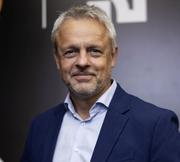
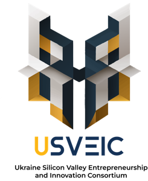
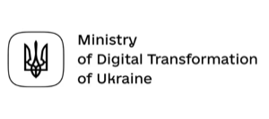
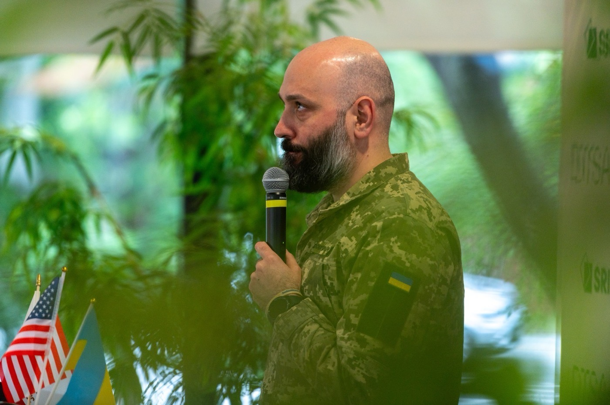
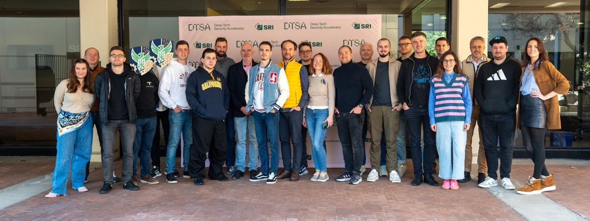
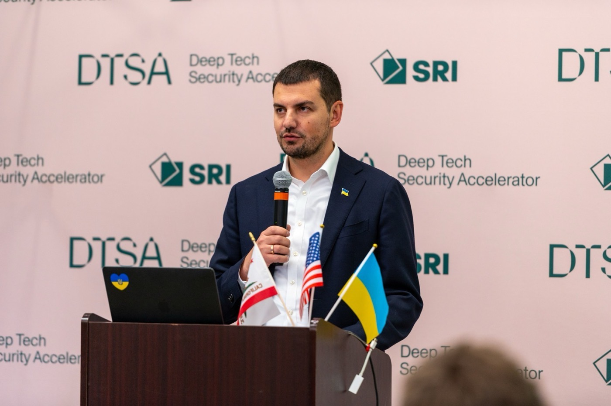
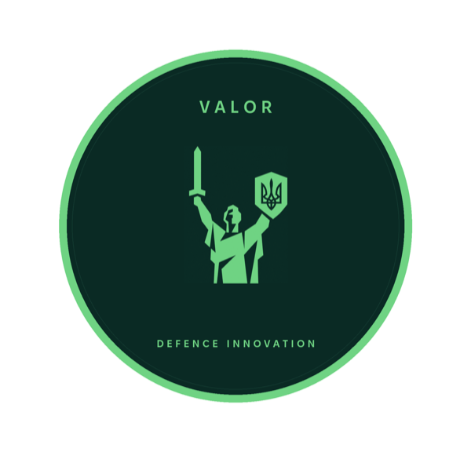

VALOR connects allied governments, agencies, primes and innovation leaders with Ukraine's frontline learning, SRI-grade research and the Silicon Valley defense ecosystem.
Anchored at SRI in Menlo Park, with an active network spanning Ukraine, the United States, Europe and the Asia-Pacific.
Access applied research opportunities with SRI and leading experts across defense, security, AI, autonomy, EW, resilience and dual-use tech.
Scope a research project →Bring your companies, agencies or ecosystem partners into tailored national programs or Ukraine-led international cohorts.
Design a program →Meet high-potential Ukrainian and international founders building under real-world pressure and fast feedback cycles.
Meet the companies →Build the mindset today's defense innovation needs: entrepreneur-led, iterative, fast-moving and mission-driven.
Plan a program →Building a defense or dual-use company? Apply to DTSA →
DTSA, VALOR's flagship accelerator, has already put the model to work.
Capability cycles built for a stable world don't match a battlefield where tactics, EW and autonomy change week to week. In Ukraine, a fix reaches the field in days. Elsewhere, it can take years.
VALOR is building the #1 Silicon Valley × Ukraine defense innovation center. It's a permanent, multinational platform that connects battlefield experience from Ukraine with joint research, acceleration for new companies and access to allied markets.
DTSA has tested this model over two cohorts. VALOR builds a lasting organization around it, adding education, applied R&D, a global community and Centers of Excellence. Each new program and partner adds to the shared network.
Five connected pillars for sourcing, validating and scaling allied defense and dual-use innovation.
DTSA and related programs prepare battle-tested defense and dual-use companies for global markets, investors and allied defense customers.
Executive programs that help military, government and industry leaders work with companies, operate at faster cycles and understand modern defense innovation.
Joint applied research that connects SRI, Ukrainian experts, companies and partner countries across autonomy, EW, sensing and AI, taking a problem from research question to prototype, validation and commercialization.
A high-trust international network of companies, investors, military leaders, academics, primes and policymakers.
Topic-focused expert hubs that bring operators, engineers, researchers, companies, primes and military stakeholders together around a specific domain.
Coming next: VALOR Capital, a dedicated investment vehicle to back companies coming through the ecosystem.
Programs, delegations and executive education bring out the challenges allied nations share.
Those challenges become joint research with SRI, Ukrainian teams and partners, then get prototyped and validated.
Validated solutions grow into companies ready for global markets, investors and allied customers.
Alumni, partners and investors deepen their collaboration and bring the next challenges back in.
The Ukrainian Silicon Valley Entrepreneurship & Innovation Consortium, a nonprofit and the home of VALOR's broader vision.
The defense, security and dual-use innovation center. VALOR brings acceleration, education, research and community together in one permanent structure.
The Deep Tech Security Accelerator. It is our proven operating model, with two cohorts, real results and a growing alumni network.
80+ years of partnership with the U.S. Department of Defense, allied militaries and global industry. SRI provides a trusted place to convene, research infrastructure and network access.
Brave1, UCDI, military experts, government institutions and Ukrainian defense companies. They bring operational feedback, engineering talent and strategic urgency.
VALOR is led by the team that built DTSA, together with SRI International.

Across the Asia-Pacific, governments and industry face the challenges Ukraine has met head-on: drones at scale, contested electromagnetic environments, maritime and coastal defense, resilient supply chains and the need to move from policy to capability much faster.
The VALOR Asia-Pacific Track connects regional governments, primes, researchers and companies with Ukrainian defense innovators, SRI International and Silicon Valley. It helps partner nations apply battlefield lessons to their own defense priorities.
Multi-day programs that bring Ukrainian founders, ecosystem builders, DTSA and SRI to partner nations. Sessions cover how modern warfare has changed, how Ukraine built its defense innovation ecosystem, founder case studies, closed strategic roundtables and visits to manufacturers and research centers.
Programs for ministries, defense agencies, primes and military leaders. They cover entrepreneurship, open innovation, applied AI, working with companies and leadership in the age of autonomy. Programs run at SRI in Silicon Valley or locally.
Regional companies can join a mixed international DTSA cohort, or a dedicated regional cohort calibrated to local technology maturity. Battle-tested Ukrainian founders join as mentors.
Reverse-pitch sessions, curated 1:1 meetings, demo days and partner roundtables. It's a practical path to scout, pilot, partner with, invest in or acquire emerging capabilities.
Local–SRI–Ukraine applied research in drones, autonomy, maritime systems, EW, sensors and AI.
Manufacturing collaboration, co-development, scale-up support and trusted supply chains built with regional industry.
A permanent presence that links each partner nation's industry and government to Ukraine, SRI and the wider allied network.
Cohort companies have represented Ukraine at a Tokyo defense-tech showcase co-hosted with Rakuten. VALOR is now exploring company pathways, executive education and joint research with Japanese industry partners.
Map national priorities, strengths, bottlenecks and capability gaps with local partners.
Shape the program with government, industry and research stakeholders.
Ukrainian founders and experts share what worked, what didn't and what transfers.
Joint R&D, pilots, acceleration and manufacturing partnerships turn into long-term cooperation.
Anchored at SRI in Silicon Valley, VALOR's reach already extends across the Indo-Pacific and Europe, built on close cooperation with Ukraine's defense innovation ecosystem.
VALOR works with Brave1, the Ukrainian Council of Defence Industry (UCDI), military experts, government institutions and Ukrainian defense companies. Together they anchor VALOR's battlefield feedback loop.
80+ years of DoD and allied-military partnership, deep labs and commercialization pathways host VALOR's R&D core.
Cohort companies represented Ukraine at a Tokyo defense-tech showcase co-hosted with Rakuten. An active proposal with Japanese primes is in progress.
Defense innovation exchanges, executive education and joint R&D with partner nations across the region.
Connecting companies with defense institutions, investors and partners across Europe and the Baltic and Nordic regions.


Every VALOR member gains frontline learning, world-class research, vetted innovators and a trusted allied network. Every member also adds something: a challenge, a capability, a market or capital.
DTSA cohorts at SRI International, Menlo Park. This is the repeatable deal-flow and convening format VALOR scales globally.



Practical programs, research collaborations and trusted connections that strengthen Ukraine and allied innovation ecosystems.
Join the next cohort and get mentors, investors and allied defense customers.
Apply → 02 · Governments & AgenciesExecutive education, bootcamps and delegations tailored to your ministry of defense and agencies.
Start a conversation → 03 · Research & UniversitiesScope a local–SRI–Ukraine project in drones, autonomy, EW, sensors or AI.
Scope a project → 04 · Investors, Primes & PhilanthropyJoin a limited founding-member coalition. Back companies, sponsor programs, shape the research agenda or anchor a Local VALOR node.
Become a member →
Next Step